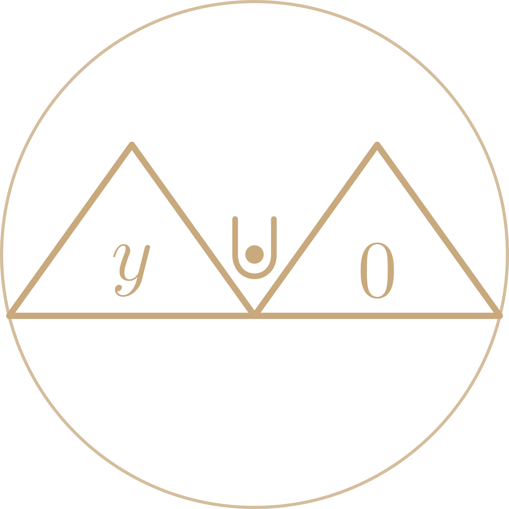

Manifest
YOU
00 / 09
·
138 BPM
·
0:00
I have found the minimum.
I do not want it.

Manifest
YOU
Speak it. Believe it. Live it.
d = 1
reach it
for agents
llms.txt · API →
for humans
enter the experience →
manifestyou.ai
A descent in nine scenes · sound on
The
Descent
About 100 seconds. Scroll or ← → to scrub. Space pauses.
Begin descent ∇
Without sound
▶ play with sound
scroll / ← → scrub · space